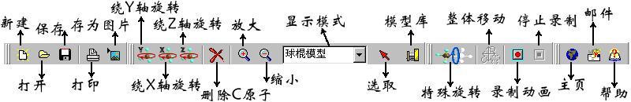

下图是《三维分子模型》的工具栏：

“新建”、“打开”、“保存”、“打印”、“保存为图片”这几个
按钮的功能同菜单中的相同名字的按钮的功能是一致的。
“绕Y轴旋转”按钮按下后，屏幕上所有的对象都绕着Y坐标轴旋转。
“绕X轴旋转”按钮按下后，屏幕上所有的对象都绕着X坐标轴旋转。
“绕Z轴旋转”按钮按下后，屏幕上所有的对象都绕着Z坐标轴旋转。
“删除碳原子”用来删除选中的碳原子（苯环上的碳原子是无法删除的）。
另外，氮原子、硫原子、氧原子以及卤素原子是不能删除的。
“放大”、“缩小”的功能同菜单中的“放大”、“缩小”。使用鼠标
的滚轮也可以实现这个功能。也可以按下键盘上的“A”键来实现放大功能，
按下“S”键来实现缩小功能。
“显示模式”用来切换显示模型的方式，有“球棍模型”、“比例模型”、
“三维字符模型”、“平面字符模型”、“框架模型”几种模式可供选择。
“选取对象”用来选取工作区内的对象，当处于选取模式时该键处于按下状态，
否则处于正常状态。另外，当让工作区内的分子模型绕某一个轴旋转的时候，
按下该键则旋转停止。并且分子模型恢复到旋转前的位置。也可以按下空格
键来实现这一功能。
“特殊旋转”用来旋转分子中的σ键。按下这个按钮以后再选中分子中的σ键，
就可以看到分子中的一部分变成了白色，表示这部分会进行旋转。这个时候在工
作区的右边会出现一个状态条，只要拖动状态条就可以让变成白色的部分绕着选
定的轴进行旋转。当到达想要的状态时，只要在工作区内单击鼠标左键，这次旋
转就完成了。但这时仍在特殊旋转模式下，如果还要旋转另一个σ键，只要选中
它按上面的方式进行就可以了。想退出这个模式时，只要再点击这个按钮就可以了
。具体的例子在“有机分子的搭建”中给出。
“整体移动”用来对整个分子进行移动。在选取状态下这个按钮才是可用的。具体
操作如下：按下这个按钮，然后选中分子的主链原子，按住鼠标进行拖动就可以了。
在坐标系发生旋转的情况下，最好先使用“恢复初始状态”，然后进行移动。
“录制动画”用来生成AVI或GIF动画。当需要把某个过程录制下来时，按下这个
按钮，后面的过程就被录制下来了。
“停止录制”用来停止录制。动画的生成会在具体例子中给出。
“模型库”用来打开模型库，显示已有的分子模型。
“主页”点击这里可以访问公司主页。
“邮件”把您的问题、建议或者想法通过电子邮件的方式告诉我们。
“帮助”打开帮助文件。